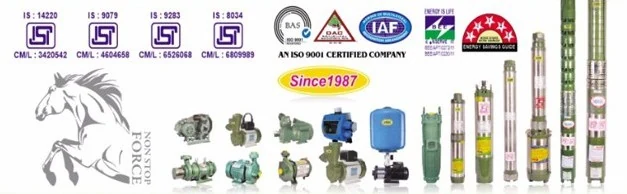
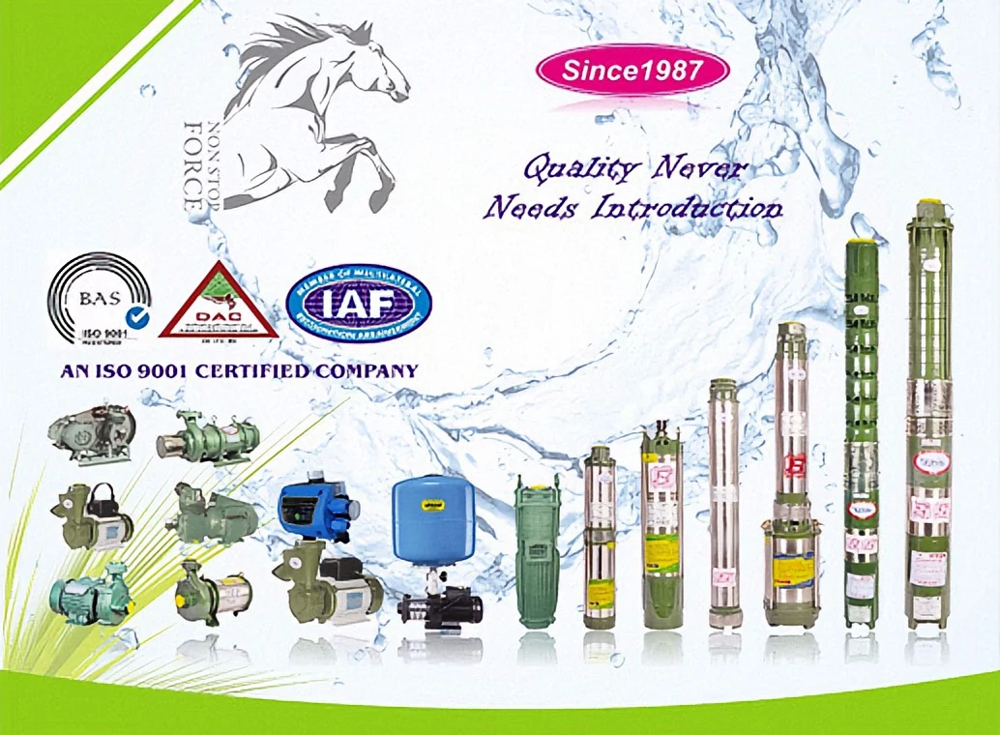
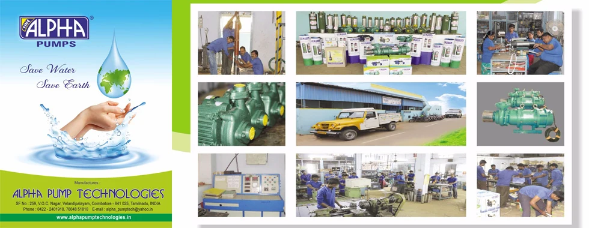
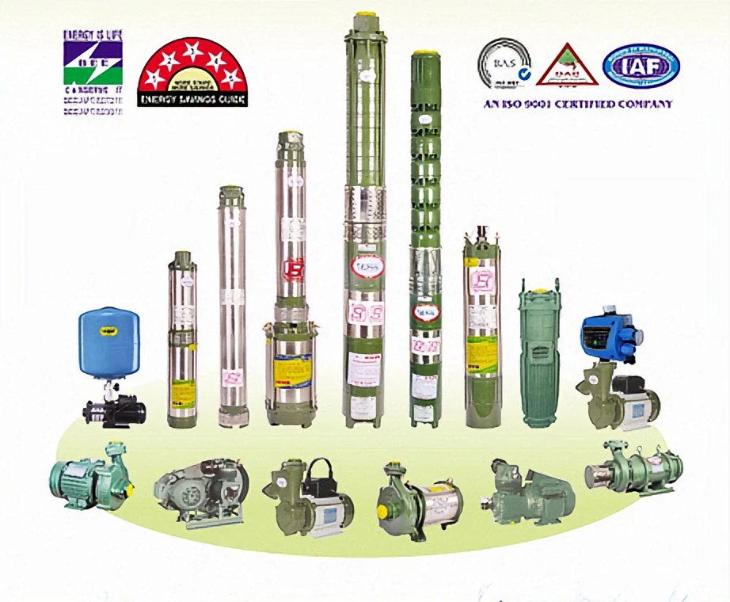
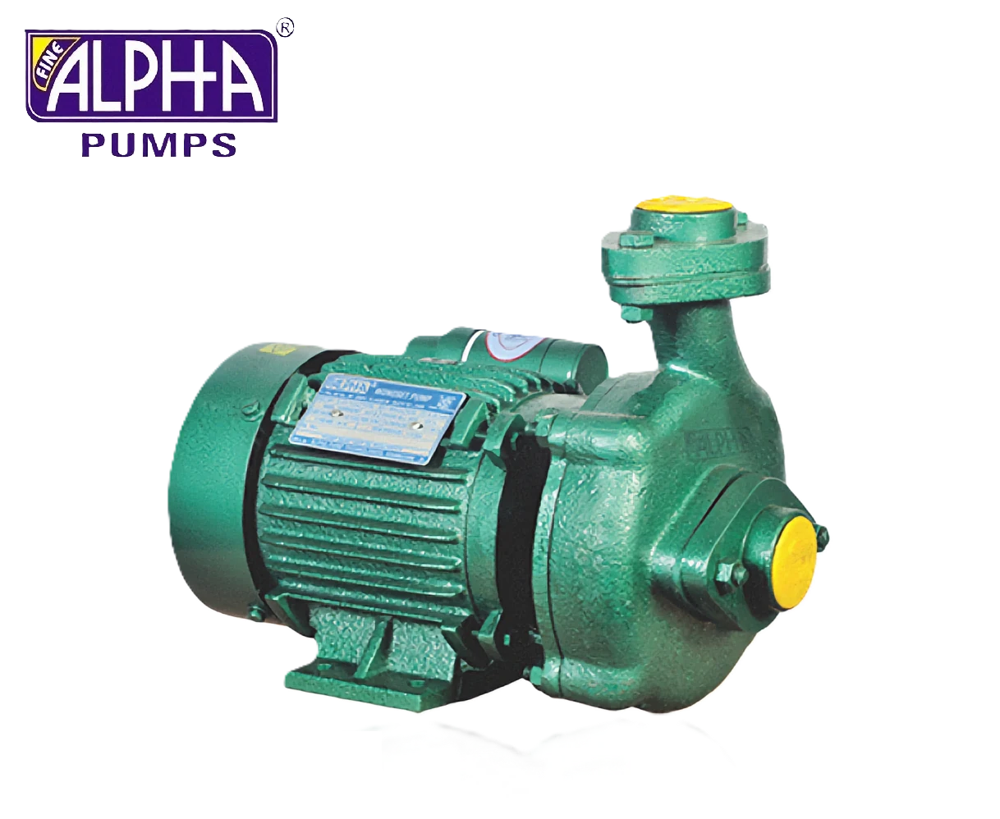
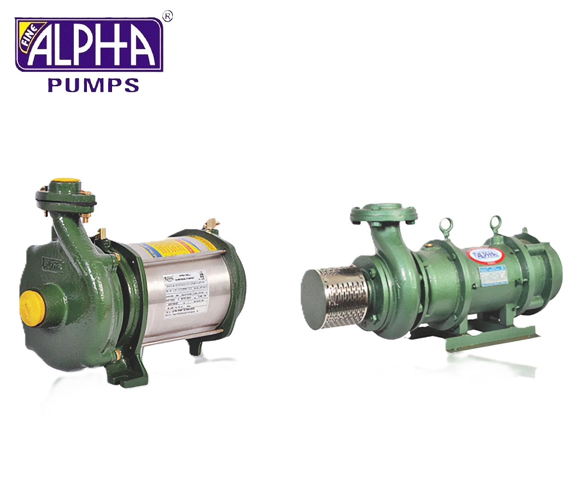
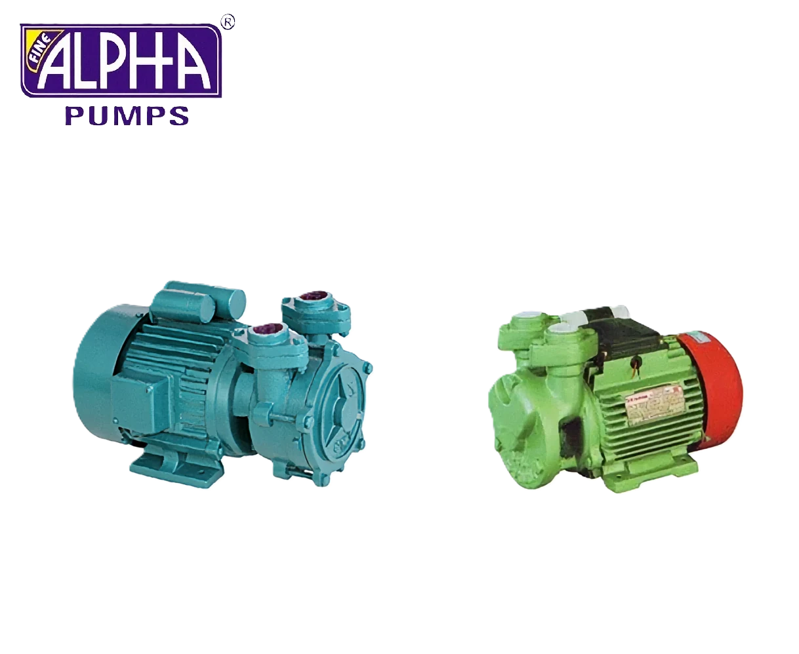

Certified quality
ISI marked and ISO 9001 certified — pumps built to national standards and audited quality systems.
ISI
ISO 9001
Pumps & Motors Manufacturer · Coimbatore, India
Established in 1987 and manufacturing under the FINE ALPHA brand since 2004 — delivering motors and pumps built to international quality standards.
One manufacturer, every application — from irrigation in the field to pressure systems in high-rise buildings.
View full catalog
ISI marked and ISO 9001 certified — pumps built to national standards and audited quality systems.

Openwell irrigation, crop watering, and rural supply where water levels fluctuate.
Efficient motors and hydraulics that deliver reliable head with less waste — for farms, homes, and industry.

Reliable daily water for homes, apartments, and small bore-well installations.

Continuous-duty pumping for factories, processing plants, and heavy workloads.
Pressure boosters and high-head systems for hotels, hospitals, and institutions.
FINE ALPHA Range
Four pump families engineered for agricultural, domestic, and industrial applications — browse each line for specifications and models.
View full catalog
Centrifugal monoblock pumps manufactured with latest technology for peak performance — suited to continuous operation in residential and light industrial settings.

Openwell solutions for agriculture, industry, and municipal supply — our broadest catalog covering fluctuating water levels and high-head requirements.

Powder-coated regenerative pumps with rust-proof aluminium bodies — handy, portable units designed for small domestic and light commercial water transfer.
Purpose-built for bore wells where reliable suction head is critical — widely specified for houses, hotels, apartment blocks, and hospitals.
About Alpha Pump Technologies
What began in 1987 as fabrication works and pump spares grew into a full manufacturing operation in 2004. Today, Alpha Pump Technologies produces the complete FINE ALPHA range from our facility in Coimbatore — with a team focused on getting quality right the first time.
We always try to satisfy our customers by delivering quality assured products as per their precise requirements and needs. Owing to our customer focused and client centric approach, we have stored a huge number of reputed clients in our database.
We conduct stringent quality checks at various crucial operational stages to ensure optimum quality standards in the manufactured end products. The team of quality controllers employed by us rigorously checks the procured raw material before using it for production purposes.
Why Choose Us
Rigorous quality checks and a customer-first approach have earned the confidence of dealers and end-users across India.
Quality first
Stringent checks at every production stage — from raw material inspection through final testing.
Engineering
Purpose-built impeller designs and modern manufacturing for peak performance across agricultural and industrial markets.
Partnership
Clear policies and regular market surveys help us deliver products tailored to dealer and end-user needs.
Full range
From self-priming units to 6" submersibles and pressure boosters — one trusted manufacturer for every sector.
Get Started
Contact our team for product specifications, pricing, and technical support — or browse the full FINE ALPHA catalog.